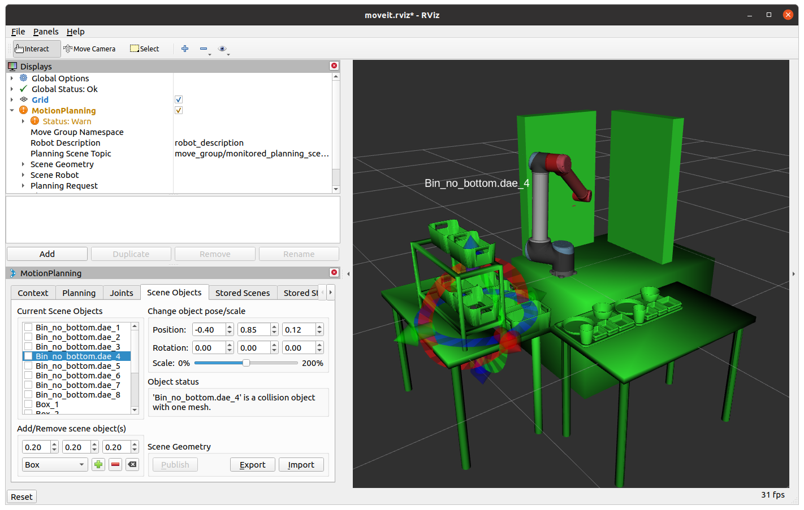

One of the difficulties in this competition is to move the robot arm to a place without collision with the surrounding physical environment, such as bins and the rack. Our solution was building a digital twin in the Moveit! motion planning framework. Since this framework considers the motion planning of a robot arm by avoiding virtual objects, both motion planning and collision avoidance can be exploited as long as the virtual objects and the robot arms present the actual ones.
In Ubuntu 20.04, we installed the robot operating system (ROS) Noetic version and MoveIt! Noetic. The digital twin shown in MoveIt! consists of three parts: (1) connecting a virtual gripper to the virtual robot arm (UR5 or UR10), (2) loading the arm and the gripper in MoveIt!, (3) controlling the real robot from the virtual robot, and (4) building the surrounding environment for collision avoidance.
1. Connecting a virtual gripper to the virtual robot arm.
In our actual setup, a Robotiq 2F gripper has been connected to the UR10 robot. For the digital twin of it, we created a xacro file that combines two different URDF files representing the gripper and the robot, respectively. For the technical details, please refer to this link.
2. Loading the arm and the gripper in MoveIt!
Loading the gripper-attached robot arm in MoveIt! GUI can be very tricky because there are so many parameters to tune. One simple way to set it up is using MoveIt Setup Assistant. Although the tool does not solve all of your problems, it can be a good starting point. We summarized how to use it here.
3. Controlling the real robot from the virtual robot
We first installed the "Universal_Robots_ROS_Driver" package in Ubuntu 20.04. For communications between the Ubuntu PC and the robot, we also installed the "externalcontrol-x.x.x.urcap" program in the teaching pendant of our UR10-CB. Once installed, we were able to control the robot arm from MoveIt!. You can find basic technical details here.
4. Building the surrounding environment for collision avoidance
We designed all tables, bins, trays, and a rack in 3D CAD files, converted the files to dae files using MeshLab, and imported them into MoveIt! As shown in the figure below, each dae file can be located and rotated as you want at the "Scene Objects" tab.

|
.gif)